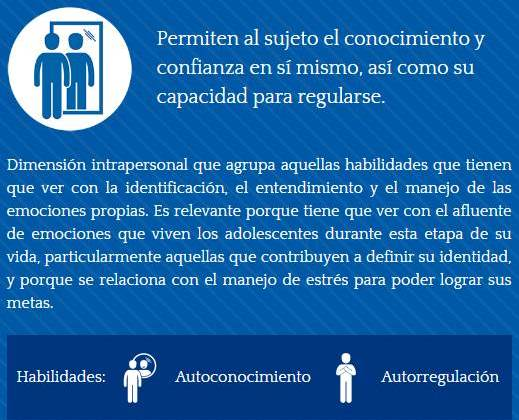
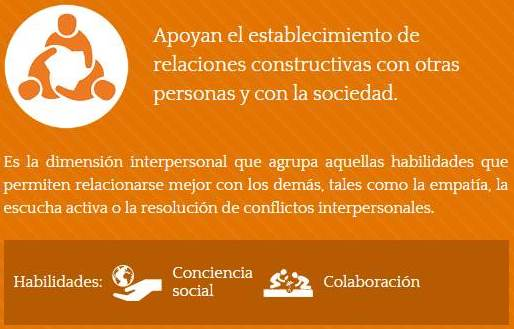
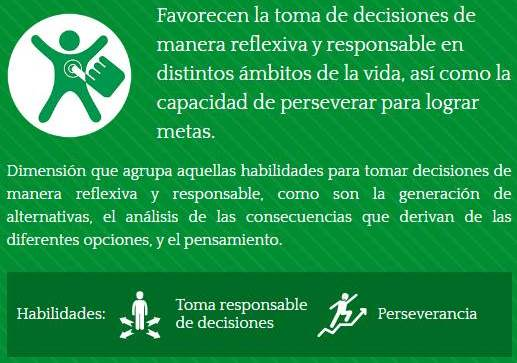

Promueve 6 habilidades organizadas en tres dimensiones
Objetivo
Mejorar los ambientes escolares y promover el aprendizaje de las habilidades socioemocionales de las y los jóvenes de la educación media superior para elevar su bienestar presente y futuro y puedan enfrentar exitosamente sus retos académicos y personales.
Cada uno de los aspectos se trabajará a partir del desarrollo de habilidades socioemocionales específicas: autoconocimiento, autorregulación, conciencia social, colaboración, toma de decisiones y perseverancia. Y de tres herramientas que se trabajan transversalmente: atención, claridad y lenguaje emocional.
Cada una de las habilidades socioemocionales antecede y acompaña a la siguiente, en la búsqueda de acciones y decisiones que promueven el bienestar personal y de su entorno. Se complementan entre sí, de manera que todas se construirán y fortalecerán simultáneamente.


